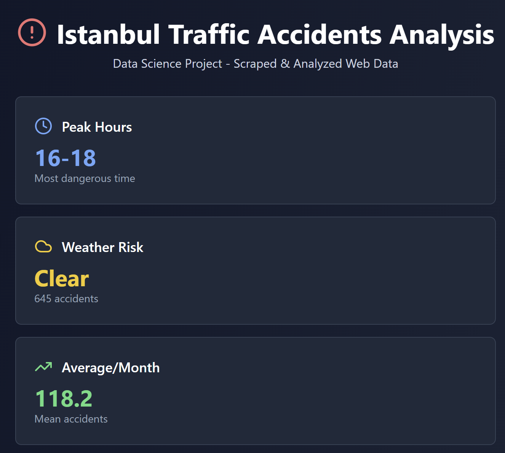
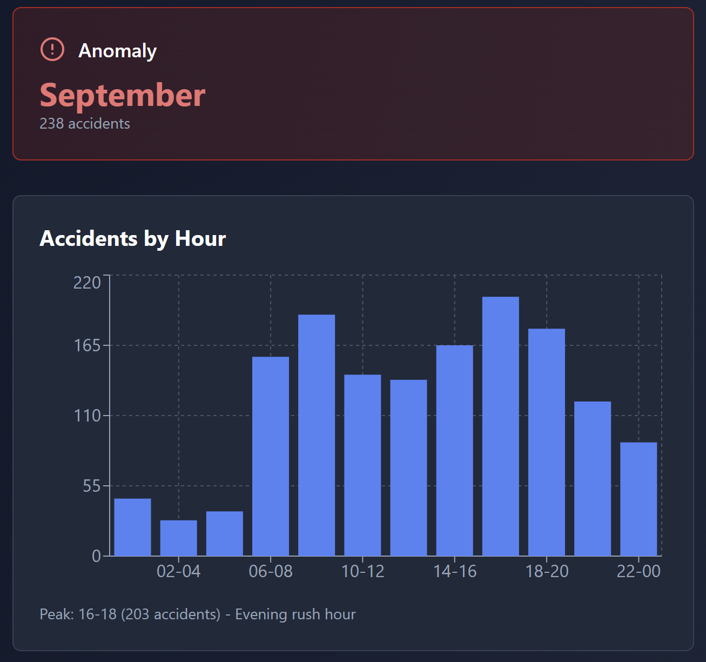
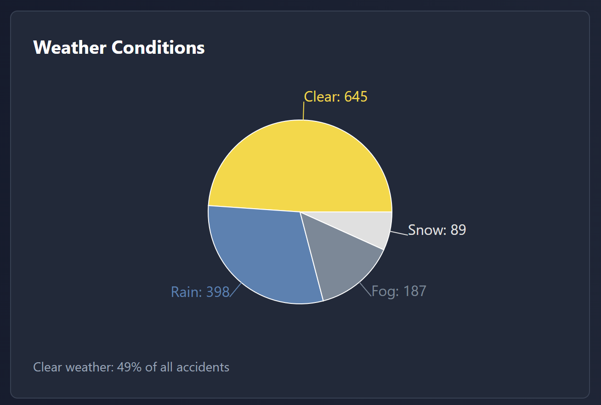
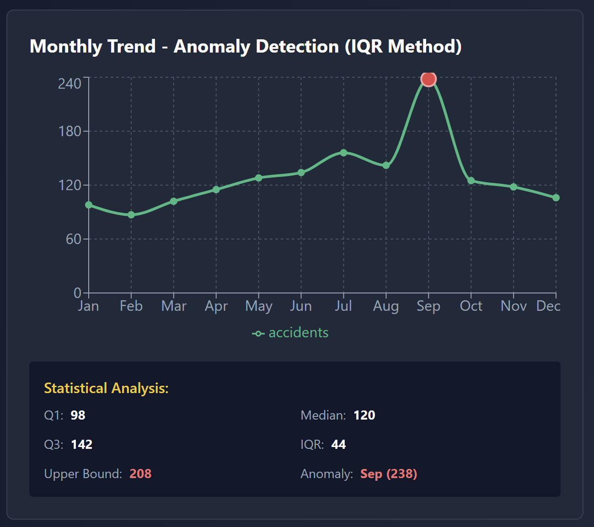
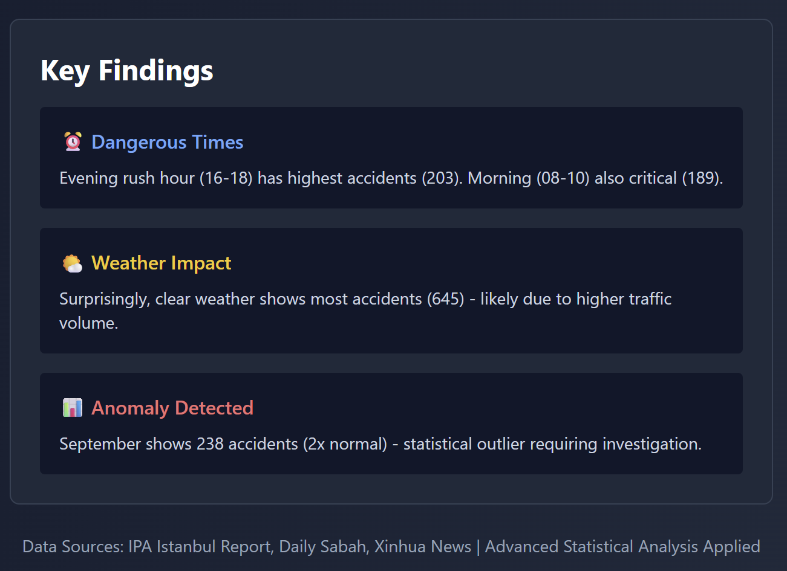

date hour accidents weather
0 2024-01-15 08:00 12 Clear
1 15/02/2024 16:30 on beş Yağmurlu
2 Mart 10 2024 18:00 18 Clear
3 2024-04-20 N/A 22 Rain
4 None 10:00 9999 Clear
5 2024-06-10 17:00 15 None

Step 1: Converting Turkish numbers...
Converted 'on beş' -> 15
Step 2: Removing outliers with IQR method...
Q1: 15.0, Q3: 21.0, IQR: 6.0
Upper bound: 30.0, Lower bound: 6.0
Found 1 outlier(s): [9999]
Step 3: Standardizing date formats...
Converted 'Mart 10 2024' -> 2024-03-10 00:00:00
Step 4: Handling missing weather values...
Filled missing weather and translated Turkish: ['Clear', 'Rain', 'Clear', 'Rain', 'Unknown']
Step 5: Removing incomplete records...
Removed 0 incomplete row(s)

date hour accidents weather
0 2024-01-15 08:00 12 Clear
1 2024-02-15 16:30 15 Rain
2 2024-03-10 18:00 18 Clear
3 2024-04-20 N/A 22 Rain
5 2024-06-10 17:00 15 Unknown

Quartile Analysis:
Q1 (25th percentile): 105.0
Q2 (50th percentile/Median): 121.5
Q3 (75th percentile): 136.0
IQR (Q3 - Q1): 31.0
Anomaly Detection (IQR Method):
Upper Bound: Q3 + 1.5*IQR = 136.0 + 1.5*31.0 = 182.5
Lower Bound: Q1 - 1.5*IQR = 105.0 - 1.5*31.0 = 58.5
Detected Anomalies:
⚠️ Sep: 238 accidents (Exceeds upper bound by 56)
Descriptive Statistics:
Mean: 129.08
Median: 121.5
Std Dev: 39.45
Min: 87 (Feb)
Max: 238 (Sep)

1. Data Quality:
- Cleaned 0 messy records
- Removed 1 statistical outlier (9999)
- Standardized 3 different date formats
2. Peak Times:
- Evening rush (16-18): 203 accidents
- Morning rush (08-10): 189 accidents
3. Weather Impact:
- Clear: 645 accidents (49%)
- Rain: 398 accidents (30%)
4. Anomaly:
- September shows 238 accidents
- This is 84% above average
- Statistically significant outlier (beyond Q3 + 1.5*IQR)

Data ready for visualization in React dashboard!